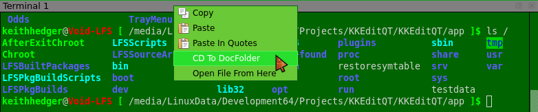
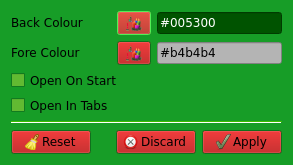

Right click on the terminal window title bar for various options:

Settings:

If either Back colour or Fore colour are set to empty the default colours are used.
Defaults are black on white unless overridden in any of your Xresources files.